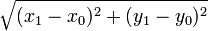

Java Programming/Understanding a Java Program
Navigate Getting Started topic:
|
This article presents a small Java program which can be run from the console. It computes the distance between two points on a plane. You need not understand the structure and meaning of the program just yet; we will get to that soon. Also, because the program is intended as a simple introduction, it has some room for improvement, and later in the module we will show some of these improvements. But let's not get too far ahead of ourselves!
The Distance Class: Intent, Source, and Use
This class is named Distance, so using your favorite editor or Java IDE, first create a file named Distance.java, then copy the source below and paste it into the file and save the file.
public class Distance { private java.awt.Point point0, point1; public Distance(int x0, int y0, int x1, int y1) { point0 = new java.awt.Point(x0, y0); point1 = new java.awt.Point(x1, y1); } public void printDistance() { System.out.println("Distance between " + point0 + " and " + point1 + " is " + point0.distance(point1)); } public static void main(String[] args) { Distance dist = new Distance( intValue(args[0]), intValue(args[1]), intValue(args[2]), intValue(args[3])); dist.printDistance(); } private static int intValue(String data) { return Integer.parseInt(data); } }
At this point, you may wish to review the source to see how much you might be able to understand. While perhaps not being the most literate of programming languages, someone with understanding of other procedural languages such as C, or other OO languages such as C++ or C#, will be able to understand most if not all of the sample program.
Once you save the file, compile the program:
javac Distance.java
(If the javac command fails, review the Java installation instructions.)
To run the program, you supply it with the x and y coordinates of two points on a plane. (For this version of Distance, only integer points are supported.) The command sequence is
java Distance x0 y0 x1 y1
to compute the distance between the points (x0, y0) and (x1, y1)
For example, the command
java Distance 0 3 4 0
will compute the distance between the points (0,3) and (4,0) and print the following:
Distance between java.awt.Point[x=0,y=3] and java.awt.Point[x=4,y=0] is 5.0
The command
java Distance -4 5 11 19
will compute the distance between the points (-4,5) and (11,19):
Distance between java.awt.Point[x=-4,y=5] and java.awt.Point[x=11,y=19] is 20.518284528683193
We'll explain this strange looking output, and also show how to improve it, later.
Detailed Program Structure and Overview
As promised, we will now provide a detailed description of this Java program. We will discuss the syntax and structure of the program and the meaning of that structure.
Introduction to Java Syntax
The syntax of a Java class is the characters and symbols and their structure used to code the class using Unicode characters. A fuller treatment of the syntax elements of Java may be found at Syntax. We will provide here only enough description of the syntax to grasp the above program.
Java programs consist of a sequence of tokens. There are different kinds of tokens. For example, there are word tokens such as class and public which represent keywords - special words with reserved meaning in Java. Other words (non keywords such as Distance, point0, x1, and printDistance) are identifiers. Identifiers have many different uses in Java but primarily they are used as names. Java also has tokens to represent numbers, such as 1 and 3; these are known as literals. String literals, such as "Distance between ", consist of zero or more characters embedded in double quotes, and operators such as + and = are used to express basic computation such as addition or String concatenation or assignment. There are also left and right braces ({ and }) which enclose blocks. The body of a class is one such block. Some tokens are punctuation, such as periods . and commas , and semicolons ;. You use whitespace such as spaces, tabs, and newlines, to separate tokens. For example, whitespace is required between keywords and identifiers: publicstatic is a single identifier with twelve characters, not two Java keywords.
Declarations and Definitions
Sequences of tokens are used to construct the next building blocks of Java classes: declarations and definitions. A class declaration provides the name and visibility of a class. For our example,
public class Distance
is the class declaration. It consists (in this case) of two keywords, public and class followed by the identifier Distance.
This means that we are defining a class named Distance. Other classes, or in our case, the command line, can refer to the class by this name. The public keyword is an access modifier which declares that this class and its members may be accessed from other classes. The class keyword, obviously, identifies this declaration as a class. Java also allows declarations of interfaces and (as of Java 5) annotations.
The class declaration is then followed by a block (surrounded by curly braces) which provides the class's definition. The definition is the implementation of the class - the declaration and definitions of the class's members. This class contains exactly six members, which we will explain in turn.
- Two field declarations, named
point0andpoint1 - A constructor declaration
- Three method declarations
Example: Instance Fields
The declaration
private java.awt.Point point0, point1;
declares two instance fields. Instance fields represent named values that are allocated whenever an instance of the class is constructed. When a Java program creates a Distance instance, that instance will contain space for point0 and point1. When another Distance object is created, it will contain space for its own point0 and point1 values. The value of point0 in the first Distance object can vary independently of the value of point0 in the second Distance object.
This declaration consists of:
- The
privateaccess modifier,
which means these instance fields are not visible to other classes. - The type of the instance fields. In this case, the type is
java.awt.Point.
This is the classPointin thejava.awtpackage. - The names of the instance fields in a comma separated list.
These two fields could also have been declared with two separate but more verbose declarations,
private java.awt.Point point0; private java.awt.Point point1;
Since the types of these fields is a reference type (i.e. a field that refers to or can hold a reference to an object value), Java will implicitly initialize the values of point0 and point1 to null when a Distance instance is created. The null value means that a reference value does not refer to an object. The special Java literal, null is used to represent the null value in a program. While you can explicitly assign null values in a declaration, as in
private java.awt.Point point0 = null; private java.awt.Point point1 = null;
it is not necessary and most programmers omit such default assignments.
Example: Constructor
A constructor is a special method in a class which is used to construct an instance of the class. The constructor can perform initialization for the object, beyond that which the Java VM does automatically. For example, Java will automatically initialize the fields point0 and point1 to null.
Below is the constructor for this class. It consists of five parts:
- The optional access modifier(s).
In this case, the constructor is declaredpublic - The constructor name, which must match the class name exactly:
Distancein this case. - The constructor parameters.
The parameter list is required. Even if a constructor does not have any parameters, you must specify the empty list(). The parameter list declares the type and name of each of the method's parameters. - An optional
throwsclause which declares the exceptions that the constructor may throw. This constructor does not declare any exceptions. - The constructor body, which is a Java block (enclosed in
{}). This constructor's body contains two statements.
public Distance(int x0, int y0, int x1, int y1)
{
point0 = new java.awt.Point(x0, y0);
point1 = new java.awt.Point(x1, y1);
}
This constructor accepts four parameters, named x0, y0, x1 and y1. Each parameter requires a parameter type declaration, which in this example is int
The two assignments in this constructor use Java's new operator to allocate two java.awt.Point objects. The first allocates an object representing the first point, (x0, y0), and assigns it to the point0 instance variable (replacing the null value that the instance variable was initialized to). The second statement allocates a second java.awt.Point instance with (x1, y1) and assigns it to the point1 instance variable.
This is the constructor for the Distance class. Distance implicitly extends from java.lang.Object. Java inserts a call to the super constructor as the first executable statement of the constructor if there is not one explicitly coded. The above constructor body is equivalent to the following body with the explicit super constructor call:
{
super();
point0 = new java.awt.Point(x0, y0);
point1 = new java.awt.Point(x1, y1);
}
While it is true that this class could be implemented in other ways, such as simply storing the coordinates of the two points and computing the distance as , this class instead uses the existing java.awt.Point class. This choice matches the abstract definition of this class: to print the distance between two points on the plane. We take advantage of existing behavior already implemented in the Java platform rather than implementing it again. We will see later how to make the program more flexible without adding much complexity, because we choose to use object abstractions here. However, the key point is that this class uses information hiding. That is, how the class stores its state or how it computes the distance is hidden. We can change this implementation without altering how clients use and invoke the class.
Example: Methods
Methods are the third and most important type of class member. This class contains three methods in which the behavior of the Distance class is defined: printDistance(), main(), and intValue()
The printDistance() method
The printDistance() method prints the distance between the two points to the standard output (normally the console).
public void printDistance()
{
System.out.println("Distance between " + point0
+ " and " + point1
+ " is " + point0.distance(point1)); }
}
This instance method executes within the context of an implicit Distance object. The instance field references, point0 and point1, refer to instance fields of that implicit object. You can also use the special variable this to explicitly reference the current object. Within an instance method, Java binds the name this to the object on which the method is executing, and the type of this is that of the current class. The body of the printDistance method could also be coded as
System.out.println("Distance between " + this.point0
+ " and " + this.point1
+ " is " + this.point0.distance(this.point1)); }
to make the instance field references more explicit.
This method both computes the distance and prints it in one statement. The distance is computed with point0.distance(point1); distance() is an instance method of the java.awt.Point class (of which point0 and point1 are instances. The method operates on point0 (binding this to the object that point0 refers to during the execution of the method) and accepting another Point as a parameter. (Actually, it is slightly more complicated than that, but we'll explain later.) The result of the distance() method is a double precision floating point number.
This method uses the syntax
"Distance between " + this.point0 + " and " + this.point1 + " is " + this.point0.distance(this.point1)
to construct a String to pass to the System.out.println(). This expression is a series of String concatenation methods which concatenates Strings or the String representation of primitive types (such as doubles) or objects, and returns a long string. For example, the result of this expression for the points (0,3) and (4,0) is the String
"Distance between java.awt.Point[x=0,y=3] and java.awt.Point[x=4,y=0] is 5.0"
which the method then prints to System.out.
In order to print, we invoke the println(). This is an instance method from java.io.PrintStream, which is the type of the static field out in the class java.lang.System. The Java VM binds System.out to the standard output stream when it starts a program.
The main() method
The main() method is the main entry point which Java invokes when you start a Java program from the command line. The command
java Distance 0 3 4 0
instructs Java to locate the Distance class, put the four command line arguments into an array of String values, then pass those arguments the public static main(String[]) method of the class. (We will introduce arrays shortly.) Any Java class that you want to invoke from the command line or desktop shortcut must have a main method with this signature.
public static void main(String[] args)
{
Distance dist = new Distance(
intValue(args[0]), intValue(args[1]),
intValue(args[2]), intValue(args[3]));
dist.printDistance();
}
The main() method invokes the final method, intValue(), four times. The intValue() takes a single string parameter and returns the integer value represented in the string. For example, intValue("3") will return the integer 3.
The intValue() method
The intValue() method delegates its job to the Integer.parseInt() method. The main method could have called Integer.parseInt() directly; the intValue() method simply makes the main() method slightly more readable.
private static int intValue(String data)
{
return Integer.parseInt(data);
}
This method is private since, like the fields point0 and point1, it is part of the internal implementation of the class and is not part of the external programming interface of the Distance class.
Static vs. Instance Methods
Both the main() and intValue() methods are static methods. The static keyword tells the compiler to create a single memory space associated with the class. Each individual object instantiated has its own private state variables and methods but use the same static methods and members common to the single class object created by the compiler when the first class object is instantiated or created. This means that the method executes in a static or non-object context - there is no implicit separate instance available when the static methods run from various objects, and the special variable this is not available. As such, static methods cannot access instance methods or instance fields (such as printDistance()) or point0) directly. The main() method can only invoke the instance method printDistance() method via an instance reference such as dist.
Data Types
Most declarations have a data type. Java has several categories of data types: reference types, primitive types, array types, and a special type, void.
Reference Types
A reference type is a Java data type which is defined by a Java class or interface. Reference types derive this name because such values refer to an object or contain a reference to an object. The idea is similar to pointers in other languages like C.
Java represents sequences of character data, or String, with the reference type java.lang.String which is most commonly referred to as String. String literals, such as "Distance between " are constants whose type is String.
This program uses three separate reference types:
- java.lang.String (or simply String)
- Distance
- java.awt.Point
For more information see chapter : Java Programming/Classes, Objects and Types.
Primitive Types
In addition to object or reference types, Java supports primitive types. The primitive types are used to represent Boolean, character, and numeric values. This program uses only one primitive type explicitly, intdoubledistance() method of java.awt.Point. double values are 64 bit IEEE floating point values. The main() method uses integer values 0, 1, 2, and 3 to access elements of the command line arguments. The Distance() constructor's four parameters also have the type int. Also, the intValue() method has a return type of int. This means a call to that method, such as intValue(args[0]), is an expression of type int. This helps explain why the main method cannot call
new Distance(args[0], args[1], args[2], args[3]) // this is an error
Since the type of the args array element is String, and our constructor's parameters must be int, such a call would result in an error because Java cannot automatically convert values of type String into int values.
Java's primitive types are booleanbytecharshortintlongfloatdouble
Array Types
Java supports arrays, which are aggregate types which have a fixed element type (which can be any Java type) and an integral size. This program uses only one array, String[] args. This indicates that args has an array type and that the element type is String. The Java VM constructs and initializes the array that is passed to the main method. See arrays for more details on how to create arrays and access their size.
The elements of arrays are accessed with integer indices. The first element of an array is always element 0. This program accesses the first four elements of the args array explicitly with the indices 0, 1, 2, and 3. (This program does not perform any input validation, such as verifying that the user passed at least four arguments to the program. We will fix that later.)
void
void is not a type in Java; it represents the absence of a type. Methods which do not return values are declared as void methods.
This class defines two void methods:
public static void main(String[] args) { ... }
public void printDistance() { ... }
Comments in Java programs
See here for more information on that important topic.
Preface
Getting started
- Understanding systems
- The process of abstraction
- The process of encapsulation
- Exercise 1: Writing your first Java program
Language fundamentals
- Variables
- Arrays
- Basic arithmetic
- Flow control
- Methods
- Statements
- Types
- String
- Classes, objects and data types
- Syntax
- Keywords
- Packages
- Nested classes
- Access modifiers
- Data and variables
- Generics
- Java security
Classes and objects
- Defining classes
- Creating objects
- Interfaces
- Using static members
- Destroying objects
- Overloading methods and constructors
- Class loading
Collections
Exceptions
- Throwing and catching exceptions
- Stack trace
- Checked exceptions
- Unchecked exceptions
- Preventing NullPointerException
- Chained exceptions(Nesting Exceptions)
Annotations
Designing user interfaces
Swing programming
- First Example: Frames and Labels
- Events and Buttons
- A Responsive Application
- Layouts
- Building a calculator
Advanced topics
- Byte code
- Concurrent programming
- Networking
- Database programming
- Reflection
- JavaBeans
- Design patterns
- Libraries, extensions and frameworks
- 3D programming
- Threads
- Remote Method Invocation (RMI) and Internet Inter-Orb Protocol (IIOP)
- Profiling
- Monitoring
Associated reading references
- Overview of the Java programming language
- Compiling programs
- Running programs
- Anatomy of a Java program
- Java IDEs